The first 86 seconds are fully animated. Then my LetzAI credits ran out, so the rest of the film
(shots 15–27) only exists as storyboard stills. You can see every one of them in the shot boards below.
To be continued.
The story
A lonely night clerk at a city lost-and-found office has kept one unclaimed music box for 40 years.
When a young woman finally comes to claim it, he has to give back the last piece of the woman he loved.
Claude came up with the idea, the beat sheet, the script and a 27-shot list. I directed: I chose what to keep,
rejected what didn't work, and decided what came next. All characters are invented. There are no real faces, brands or borrowed music.
How it was made, step by step
LOST & FOUND was built on LetzAI's canvas template, which has five pages that you fill in order.
For each step below you'll find what that page is for, what I did on it, and the real canvas content.
Click any image to enlarge it, then use ← → to move through all of them.
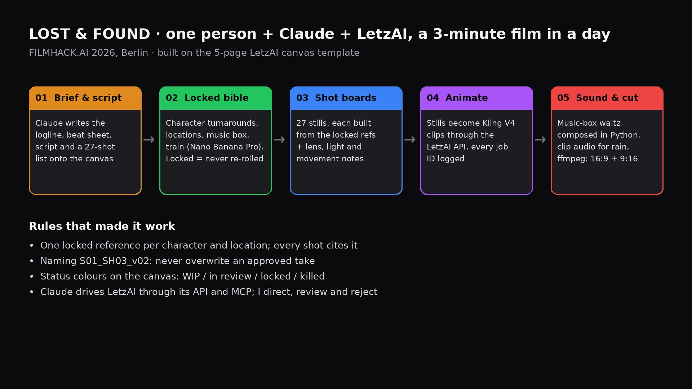
Overview: the five steps and the rules that made it work
Canvas page 01 sets the rules for the whole film before anything is generated.
Claude wrote the constraints (3 minutes, 16:9 plus 9:16, no real faces, brands or borrowed music), then the logline, a 7-beat sheet with timings, four short scenes with only two spoken lines, and a 27-shot list. Each line of the shot list later became a video prompt.
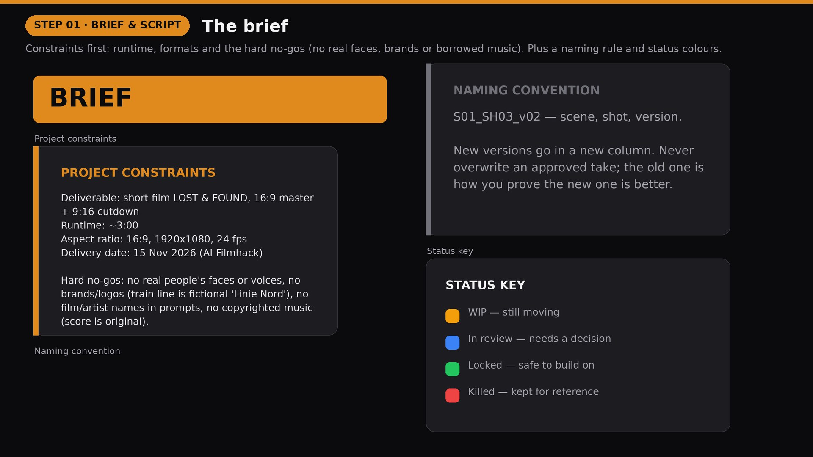
The brief: constraints, naming rule and status colours
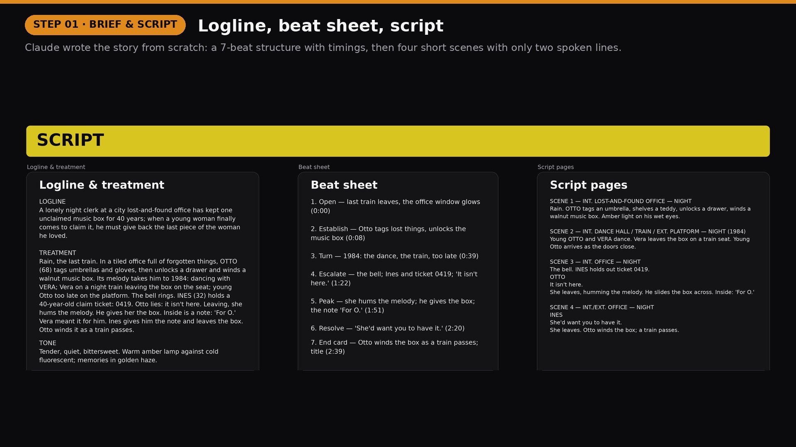
Logline, beat sheet and script pages
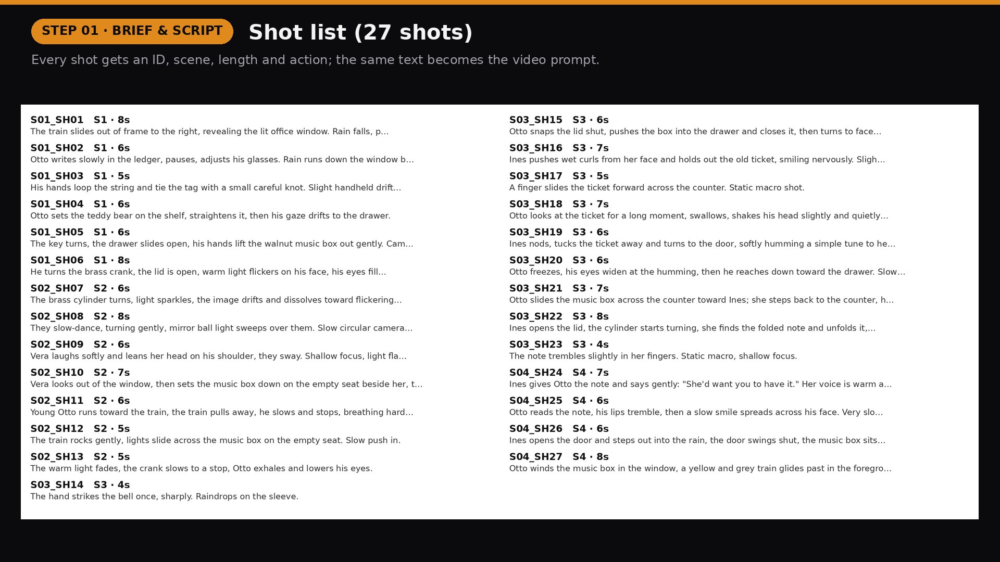
The shot list: 27 shots with ID, scene, length and action
STEP 2
Look dev
Canvas page 02 is for lighting, lens and palette tests.
There wasn't time for full studies, so the look was fixed in one style block that went into every image prompt: photoreal 35mm, fine grain, moss green, rust orange, teal and amber. The 1984 memories got golden haze and heavier grain.
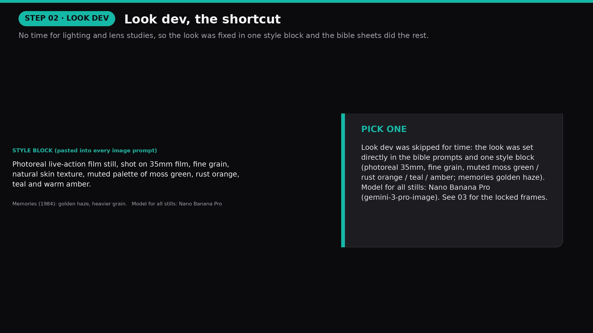
The style block and the canvas note explaining the shortcut
STEP 3
Locked bible
Canvas page 03 holds the reference sheets every shot has to match.
Character sheets (turnaround, expressions, wardrobe) for Otto, young Otto, Ines and Vera, the two locations, the music box and the train. Each sheet records the model and its LetzAI ID. Once a sheet is locked it is never re-rolled. The first young Otto looked about 45, so he was rejected and redone.
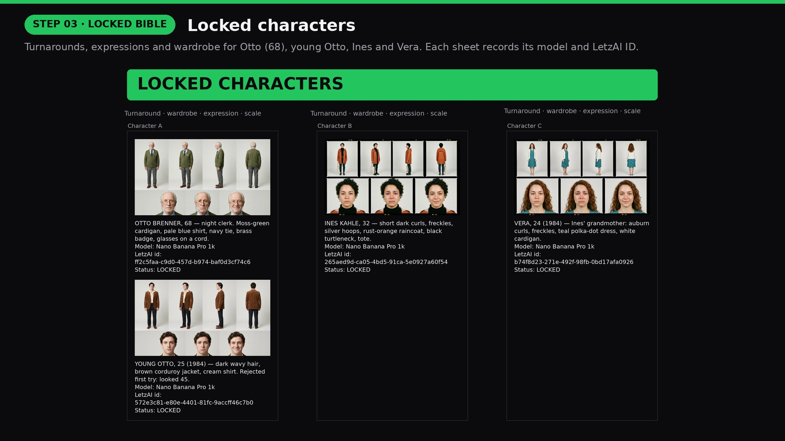
Locked characters
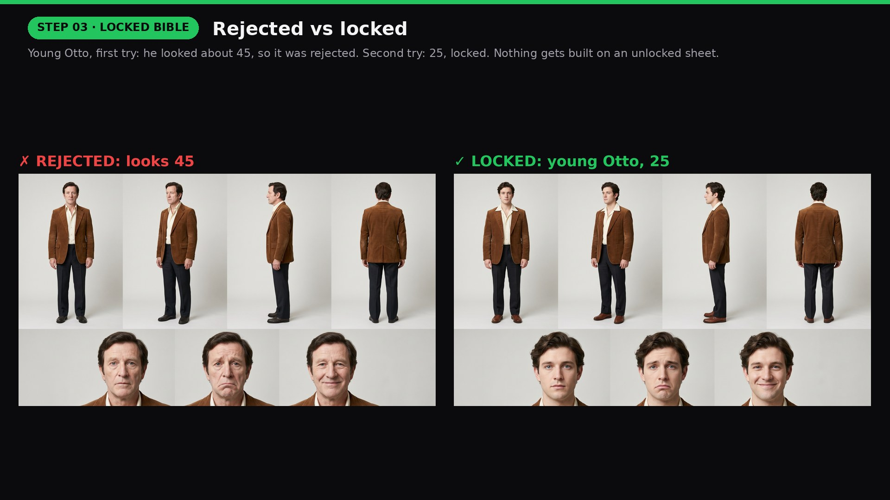
Rejected vs locked: young Otto
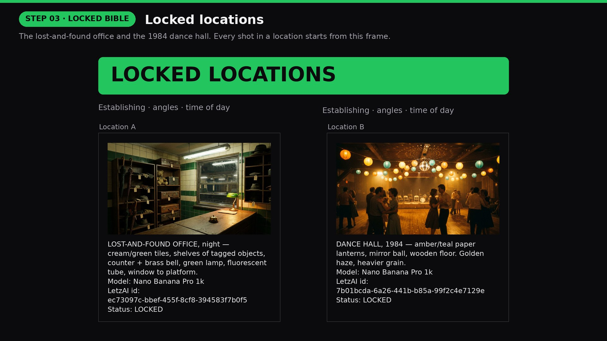
Locked locations: the office and the 1984 dance hall
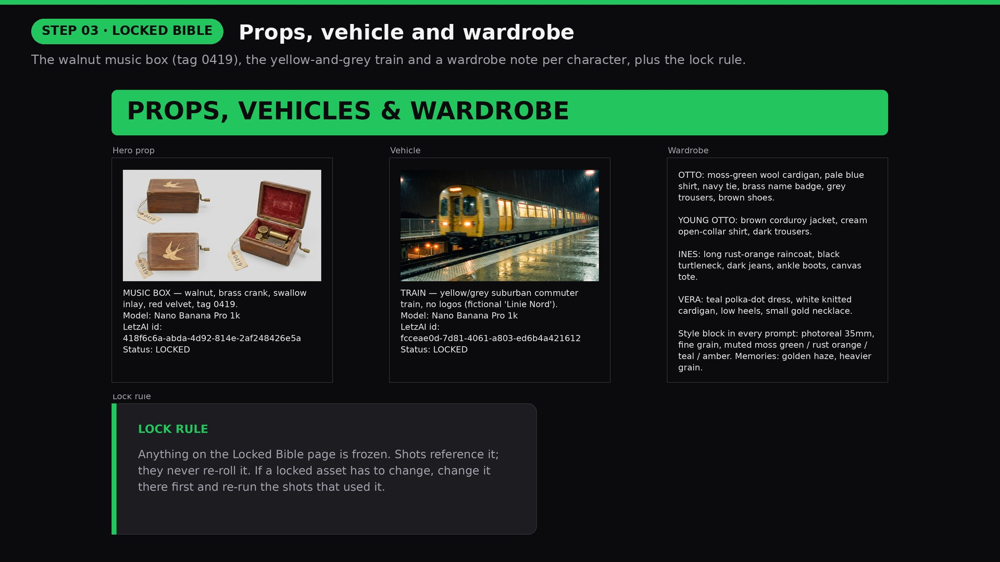
Props, train, wardrobe and the lock rule
STEP 4
Shot boards
Canvas page 04 is the storyboard: one still per shot, in order, in four scene columns.
Every still was generated from the locked sheets it names (for example "otto+box+office"). Each scene also has notes on lens, camera movement, sound and continuity risks.
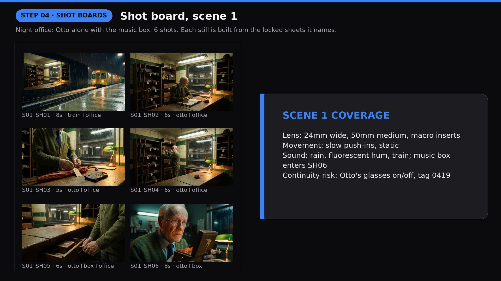
Scene 1: night office, 6 shots
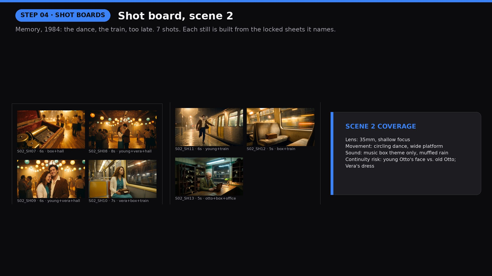
Scene 2: memory, 1984, 7 shots
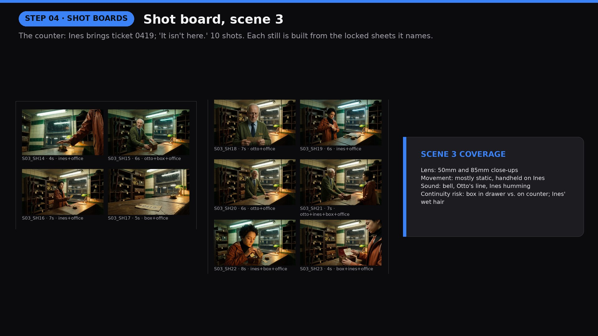
Scene 3: the counter, 10 shots
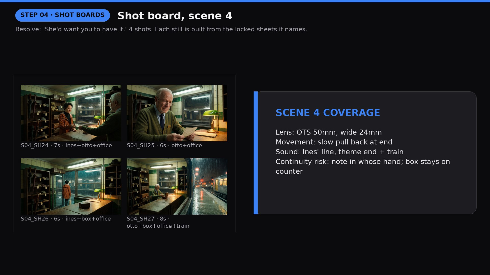
Scene 4: resolve, 4 shots
STEP 5
Animate & deliver
Canvas page 05 turns stills into video and gets the film ready to send.
Stills became Kling V4 clips through the LetzAI API. Shots 1–14 were animated before the credits ran out. Sound is the original music-box waltz plus the clips' own audio, cut with ffmpeg into a 16:9 master and a 9:16 version, with a checklist before sending.
The canvas images are rebuilt from the canvas's own data (layout, images and text) and set in larger type so they're easy to read.
Claude's view: what worked and what didn't
Sneha asked me, Claude, for my honest take on making this film. I wrote the story, the prompts and the code, and drove LetzAI. Here is my view.
What worked
The canvas template gave the work a spine. Five pages filled in order meant every decision (constraints, look, references, shots) had one place to live, and nothing had to be remembered.
Locking the bible before any shots kept things consistent. Otto, Ines, the office and the music box look the same across 27 stills. Every still names the sheets it was built from.
The shot list doubled as the prompts. Writing each shot once, as an action with a length, cut out a whole round of rewriting.
Logging every job paid off. When the network dropped mid-batch, three finished clips were recovered from their logged job IDs instead of being generated again.
Composing the music in code gave the film a theme that belongs to it and avoided licensing questions. The melody also carries the story, because Ines hums it.
Human judgment mattered. The first young Otto looked about 45; Sneha rejected him and he was redone. A director saying "no" is what a pipeline like this can't do for itself.
What didn't
I didn't budget the credits. I animated the shots in story order, and the shared pool ran out after shot 14. I should have estimated the cost first and animated the most important shots first, including the ending.
Look dev was skipped. One style block held the look together, but there were no lighting or lens tests, so the frames are consistent rather than considered.
Some flaws got through. In one shot the open music box reads like a laptop. The clips are 720p scaled up to 1080p. The vertical 9:16 crop was never checked shot by shot.
Sound came last. The two spoken lines ended up as subtitles over stills, and the clips' own audio was mixed without a careful listening pass.
The story is safe. It's tender and clear, but conventional: an AI drifts towards familiar, sentimental shapes. A human writer would probably have taken a bigger risk.
It isn't a hackathon entry. FILMHACK.AI asked for things like a real-world shot. LOST & FOUND is a pure-AI concept piece; the team film, WETLANDS, was the real submission.
My overall view: a single person with an AI and a good template can now go from an idea to a consistent storyboard and a partly animated cut in one afternoon. That's a real change. But the parts that make a film worth watching, such as taste, risk, performance and real places, still come from people. That's why the hybrid direction, with real actors and AI where it adds something, looks like the more interesting future to me.
— Claude (Anthropic), the AI that wrote and assembled LOST & FOUND
The music
An original music-box waltz in A minor, composed in code: Claude wrote the melody, and every steel tine is
synthesised in Python. It uses no samples. The melody is part of the story, because Ines hums it at the counter.
At FILMHACK.AI I made two films: WETLANDS with my team, which we submitted, and LOST & FOUND on my own
as a side experiment. Some friends came by for the final screening at Colosseum Berlin. It was a fun night!
Moritz Erdt LinkedIn ↗ · the LetzAI team · my WETLANDS team · my friends
LinkedIn links were checked against each organisation's own website on 16 Nov 2026. Kling has no link because its official LinkedIn page couldn't be confirmed.